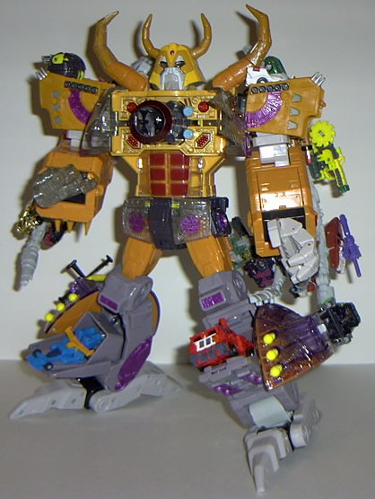

Dead
End
Dead
End
Allegiance : Minicon
Size : Mini-Con
Difficulty of Transformation : Very Easy
Color Scheme : Very dark gray, yellow, silver, and some metallic fuchsia
Rating : 6.8
Unicron
w/ Dead End
Dead
End
Allegiance
: Minicon
Size
: Mini-Con
Difficulty of Transformation
: Very
Easy
Color Scheme
: Very dark gray, yellow,
silver, and some metallic fuchsia
Rating
: 6.8
Alternate mode is a moon-
certainly an awesome idea, given Unicron's alternate mode. It's actually
pretty good, considering that it transforms- only the robot head sticks
out a bit on the bottom. My only real beef with this mode is that the patches
of yellow on an otherwise dark gray moon surface don't really look that
great- I would have preferred the entirely of the moon surface to be one
color, with paint apps on the shape of little impact craters here and there.
Dead End has excellent mold detailing, although he could really use some
more paint deco- only his robot head and big honkin' gun have any. Speaking
of the gun, it adds bit of spice to what would otherwise be a rather boring
mode to the kiddies- it's not just a ball, it's a ball with a gun! Plus,
the top half can also swivel seperately from the bottom half- not only
a great idea for aiming the gun, but also remarkable given that the thing
transforms. Dead End's Minicon port is on the very underside of this mode.
Dead End has no Minicon symbol.
The only real problem
I have with Dead End's robot mode (besides, again, the lack of paint detailing)
is that his arms look prettty wonky. His shoulders are a bit too high when
compared with his head, and he doesn't have any hands to speak of- just...
pieces of a planet hanging off. Ah well, at least he still has a big gun.
His legs and main body look pretty good for a moon Transformer, though,
and his head looks very "Miniconish", with little horns as a nod to his
"big bro". And yet... I find myself thinking, "is that it"? Namely because
I expected Unicron's minicon to be more, well... menacing. He actually
looks a tad dopey. More sharp edges and angles in his robot mode would
have done wonders. He does have great articulation for a Minicon, though-
he can mode at the shoulders at two points, the elbows (although only back-and-forth,
not up-and-down), the hips, the gun, and the knees.
Dead End is above-average
for a Minicon, although his robot mode arms are pretty weird, and he has
low paint detailing. However, he doesn't look EVIL enough to be Unicron's
minicon.
Unicron

Allegiance
: N/A officially, though
technically according to the series he created the Minicons, so... Minicon?
Size
: Supreme ($50)
Difficulty of Transformation
: Very
Hard
Color Scheme
: Gray-white, gray,
orange, "cheese" yellow, clear plastic, clear purplish plastic, metallic
light purple, very dark gray, and some yellow, silver, gunmetal gray, metallic
red, metallic fuchsia, dull gold, and baby blue
Powerlinx ports
: 29 (3 gimmicked)!
Rating
: 9.6
The Dark God of the Transformers
finally gets a toy of his own- and yep, it's a planet-eating planet, complete
with a ring and everything! This mode is pretty nice all around, with WONDERFUL
mold detailing. There's not much paint detailing, but most of it has been
saved for his robot mode, and his colors are varied enough in planet mode
where I don't really mind anyways. I especially love the horned mouth-
push the horns together and the mouth claws move in and out in a "chomping
action". Granted, you can't actually put anything IN there, but it's still
pretty cool. Also, if you attach a Minicon to either of the ports on the
sides of the planet mode and push forward, the three missiles on that side
fire one after the other. What's especially cool about this is that if
you only push it forward slowly, you'll only fire one missile at a time,
so you get the option as to whether you want to fire all three or not without
there actually being seperate triggers for each of them. There's also a
whopping twenty-four Powerlinx ports on his rings for Minicon-connectin'
goodness. Some people are miffed that Unicron isn't actually a complete
sphere in planet mode- he's more like three-fourths of one with the bottom
fourth cut off- but I actually prefer it this way, since if he were completely
round, he's roll all over the place and possibly damage his ring (which,
along with the planet surface halves in his robot mode, are his only fragile
parts). The only problem I DO have with this mode, though, is that the
parts have a hard time fitting together perfectly- there's almost always
a noticeable gap between the planet shell halves and the legs. The legs
themselves also stick out a bit from the rest of the planet mode- it would
have been better if they'd been the same color as the rest of the planet,
or something.
Unicron's robot mode
is astoundingly amazingly awesomely awesome, and is very close to his animated
Transformers: The Movie
incarnation, especially since it
was widely thought before this toy came out that the Movie's Unicron could
never get that accurate of a robot mode and still have a decent planet
mode. Unicron has outstanding mold and paint detailing, nice proportions,
and articulation everywhere you could reasonably want it- his fingers themselves
EACH move at two points, and his thumbs at one point. The planet ring becomes
skeletal wings in this mode, which I thought was a great idea in how it
was implemented. The planet shell halves, alas, hang off of his already
over-burdened wings, but you can take them off easily to get them out of
the way. If you press in a button on top of Unicron's head, his eyes blink
red on and off for several seconds, and the same happens with his clear
fist if you push it in. I would have preferred if they had just stayed
on instead of blinking, but it's still a pretty cool effect. Also, if you
attach a Minicon to the port on his upper back, his chest opens, and a
HUGE cannon comes out and fires a missile! It's a really awesome gimmick,
although due to the spring-loaded nature of the button, you can't actually
keep the Minicon on the port, or it'll pop off. Unicron also has plenty
of storage spaces for Minicons- one can fit inside a compartment in each
of his legs, as well as on two swiveling ports on his shoulders and, yes,
there's even a compartment in his stomach for one! (Unfortunately, the
panel to that one tends to pop off a bit easily.) Unicron is just an awesome
all-around figure in this mode- his feet do look a tad odd, being that
the back halves are so much larger than the front halves, but thsi is to
give him some stability.
Unicron is a great updated
version of the classic Transformers character, and is definitely worthy
of his name. Great articulation, detailing, proportions, gimmmicks, innovation...
just about everything on him is great, in fact. A few minor quibbles- such
as the planet mode not quite fitting together right now and then, as well
as the planet halves hanging off his back in robot mode- but they barely
are even worth mentioning, they are overshadowed so much by Unicron's awesomeness
everywhere else. If you really are a stickler for the movie colors, get
this version- otherwise, I'd wait for the even-more-awesome repaint coming
up in the
Energon line
. Unless, of course,
you want to get both- he IS that good, trust me.
Review by Beastbot